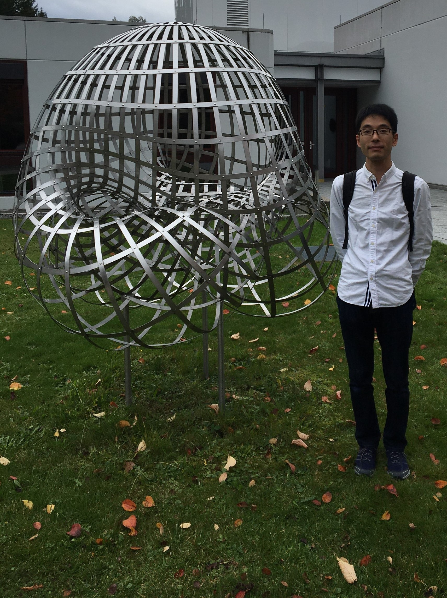

English
Japanese
Last updated: Jan. 6, 2024
藤田 直樹 (Fujita, Naoki)
熊本大学 大学院先端科学研究部
e-mail: fnaoki ``at'' kumamoto-u.ac.jp

名前:
所属:
研究内容:
-
良い対称性を持つ図形の幾何学を、“表現論”という対称性の理論を駆使して研究しています。
特に図形を退化させて情報を引き出すNewton-Okounkov凸体の理論や、シューベルト・カルキュラスという特殊な図形の数え上げに関する理論について調べています。
熊本大学ニュースレター「森と風」の教員特集
研究分野:
研究対象:
職歴:
-
2021年12月 – 現在
熊本大学 大学院先端科学研究部
准教授
-
2019年4月 – 2021年11月
東京大学 大学院数理科学研究科
学術振興会特別研究員 (PD) (No. 19J00123)
-
2018年4月 – 2020年3月
明治学院大学
非常勤講師
-
2018年4月 – 2019年3月
東京工業大学 理学院
学術振興会特別研究員 (PD, DC1からの資格変更) (No. 16J00420)
-
2016年4月 – 2018年3月
東京工業大学 理学院 数学系
学術振興会特別研究員 (DC1) (No. 16J00420)
学歴:
-
2016年4月 – 2018年3月
東京工業大学理学院 数学系 博士後期課程
指導教員: 内藤 聡
博士論文: Newton-Okounkov polytopes of Schubert varieties and crystal bases
-
2014年4月 – 2016年3月
東京工業大学大学院 数学専攻 修士課程
指導教員: 内藤 聡
修士論文: Newton-Okounkov bodies for Bott-Samelson varieties and string polytopes for generalized Demazure modules
-
2010年4月 – 2014年3月
東京工業大学 理学部数学科
長期海外訪問:
-
2016年7月 – 2016年10月
国際研究プログラム「Major Thematic Program on Combinatorial Algebraic Geometry」参加
フィールズ研究所, トロント, カナダ
外部資金獲得状況:
-
2021年12月 – 2026年3月
科学技術人材育成費補助金 (研究環境整備費)
研究テーマ「トーリック退化の表現論的研究」
研究代表者
卓越研究員事業 (文部科学省)
-
2021年12月 – 2023年3月
科学技術人材育成費補助金 (研究費)
研究テーマ「トーリック退化の表現論的研究」
研究代表者
卓越研究員事業 (文部科学省)
-
2020年4月 – 2024年3月
科学研究費助成事業（若手研究, No. 20K14281)
研究課題「クラスター構造を用いた旗多様体のトーリック退化の研究」
研究代表者
日本学術振興会
-
2019年4月 – 2022年3月
科学研究費助成事業（日本学術振興会特別研究員奨励費PD, No. 19J00123)
研究課題「Newton-Okounkov 凸体を用いた射影多様体の研究」
研究代表者
日本学術振興会
-
2016年4月 – 2019年3月
科学研究費助成事業（日本学術振興会特別研究員奨励費DC1 (2018年4月からPDに資格変更), No. 16J00420)
研究課題「結晶基底を用いた Newton-Okounkov 凸体の研究」
研究代表者
日本学術振興会
所属学協会: